Cygwin
我：键盘，最近这几天，要在一台装有微软 Windows 7 的机器上工作，也就是说，这段时间没有 Linux 可用。
键盘：Windows 7 里有终端么？
我：有一个，但是不叫终端，而叫控制台，是那个通常被称为命令提示符或 cmd 的命令行窗口。不过，从 Windows 7 开始，微软提供了 PowerShell，在功能与 Bash 较为接近，可视为同类。由于我每年在 Windows 系统里呆的时间很短，所以 PowerShell 的好坏，和我没有关系。
键盘：和我也没有关系。希望早日回到 Linux。
我：可以在 Windows 7 上安装一个 Cygwin，这样我们就可以临时有个模拟的 Linux 内核，可以在这个内核上运行 Bash。
键盘：在 Windows 系统上造一个假的内核来欺骗 Bash 么？
我：意识到自身的存在，意识到意识的存在，意识到意识可以产生新的意识，之后，世界就充满了欺骗……从 https://cygwin.com 可以下载面 Cygwin 的安装文件。若所用的 Windows 系统为 64 位，就下载 setup-x86_64.exe；若系统为 32 位，则应下载 setup-x86.exe。我的机器虽然是 64 位，但因安装的 Windows 7 是 32 位的，所以应下载 setup-x86.exe。
鼠标：唯！
键盘：我可以睡一会了。
得益于中国互联网举世无双的开放，所以 Cygwin 安装文件的下载速度只有 7 KB/秒，导致虽然只有 1 MB 的文件，下载了半个小时也没成功，总是断。只好重启系统，进入 Linux……我的 Linux 里有个梯子，通过梯子，下载速度总算过了 100 KB/秒……必须坚信，中国的互联网的确是举世无双的开放。
为了备以后的自己之需或他人之需，我将 Cygwin 的 32 位和 64 位安装文件都下载了下来，存到了百度网盘：
- setup-x86.exe：地址：https://pan.baidu.com/s/1Y23JGMdtLgHRAywKXnnYvg 提取码：ujdm
- setup-x86_64.exe：地址：https://pan.baidu.com/s/1ijhLFFBoE5a74LRXLVeoHA 提取码：q745
键盘：……刚才梦到了终端。
机器轻微响了起来，Linux 去了，Windows 7 来了……我终于能够从百度网盘以 100+ KB/秒的速度终于将 Cygwin 的 32 位安装文件 setup-x86.exe 下载成功……
鼠标：我找到它了……双击！
setup-x86.exe：你想允许来自未知发布者的以下程序对此计算机的更改吗？
鼠标：是！
setup-x86.exe：要开始安装了，下一步，还是取消？
鼠标：下一步！
setup-x86.exe：选哪个？
- Install from internet (downloaded files will be kept for future re-use)
- Download without installing
- Install from Local Directory
鼠标：从网络安装，嗯……Install from internet！下一步！
setup-x86.exe：Root Directory，要设为 C:\cygwin 吗？Install for All users 吗？
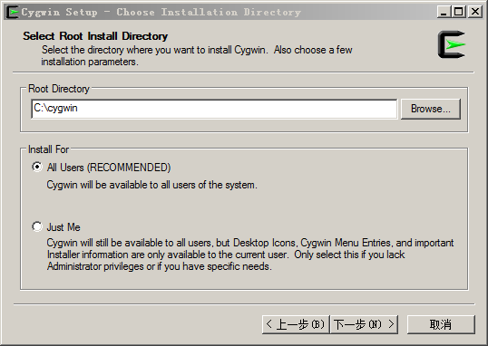
键盘：D:\cygwin
鼠标：Install for All users！下一步！
setup-x86.exe：Local Package Directory（本地包目录）是设为 D:\ 吗？
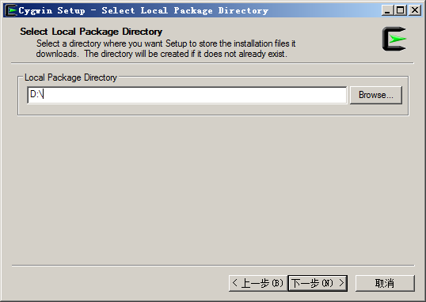
键盘：D:\cygwin-packages
鼠标：下一步……
setup-x86.exe：出错啦，这个目录不存在，要不要我帮你建一个？
鼠标：嗯！
setup-x86.exe：Select Your Internet Connection……
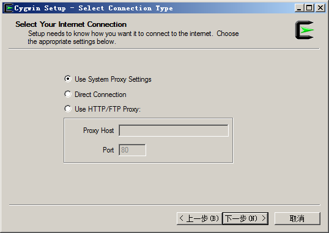
鼠标：……Direct Connection……下一步！
setup-x86.exe：等一会吧，我要从 https://cygwin.com 下载软件包镜像网站列表……当然，你有权利选择取消，但后果自负……
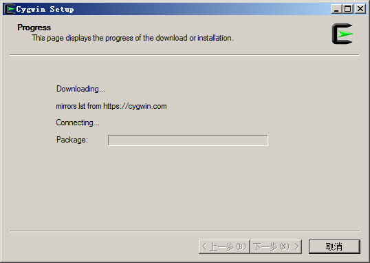
好了……网站列表有了，从里面选一个！
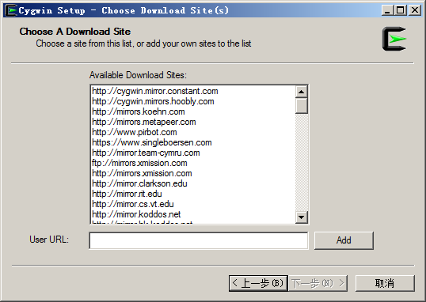
键盘：鼠标，不要轻举妄动……要记住，你是在中国，这个列表里的，大多不符合国情。还是我来吧，User URL：http://mirrors.163.com/cygwin/
最终解释权归网易所有：http://mirrors.163.com/.help/cygwin.html
鼠标：Add！
setup-x86.exe：现在可从列表里选中 http://mirrors.163.com
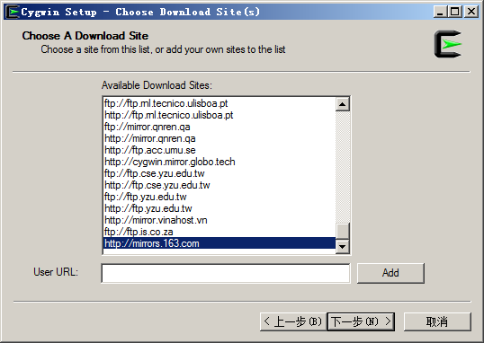
鼠标：下一步！
setup-x86.exe：现在，我要从符合国情的 http://mirrors.163.com 网站获取软件包列表，稍等片刻……当然，你有权利选择取消，但后果自负……
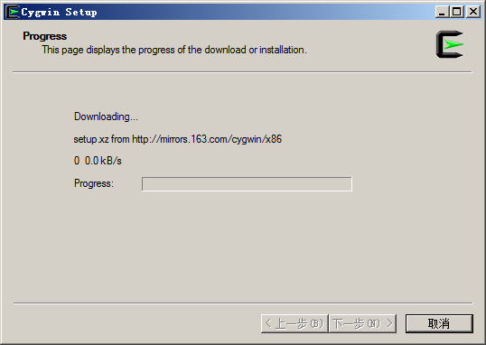
好了，已获得所有的软件包列表……接下来，选择自己要安装的软件吧。
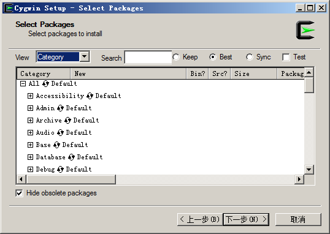
键盘：鼠标，点手绘的蓝色箭头所指向的蓝色圈圈里的那个小图标！那是 Bash。
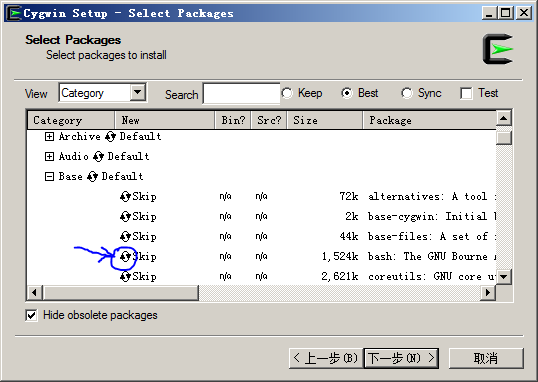
鼠标：诺！下一步！
setup-x86.exe：要安装 Bash，我告诉你，它需要依赖一些其他软件包，
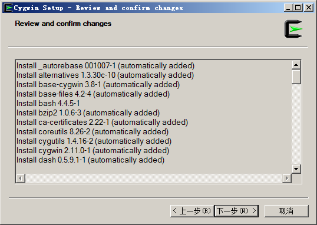
鼠标：下一步！
setup-x86.exe：唯！我帮你下载，然后安装它们……
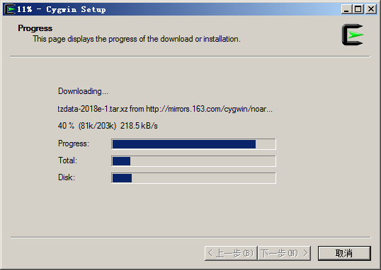
完毕！
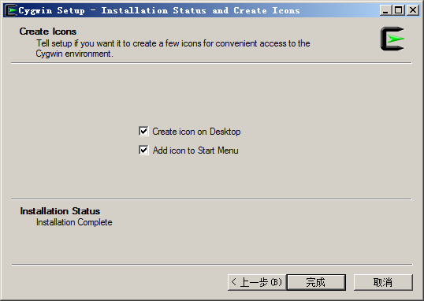
要在桌面和开始菜单里出现可以开启 Cygwin 的优美的快捷图标吗？我的建议是，要。
鼠标：完成！
键盘：桌面上或开始菜单里的 Cygwin Terminal 的图标……鼠标，拜托你双击它！
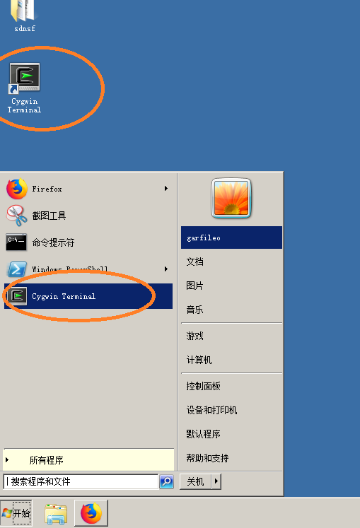
鼠标：诺！出现了这个……
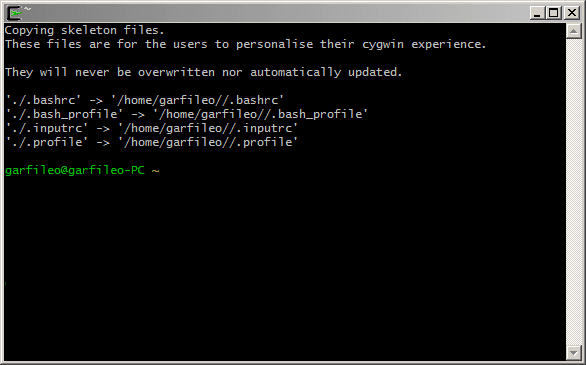
键盘：字太小了……在这个窗口内单击右键，看看有没有可以设置的选项……
鼠标：诺！
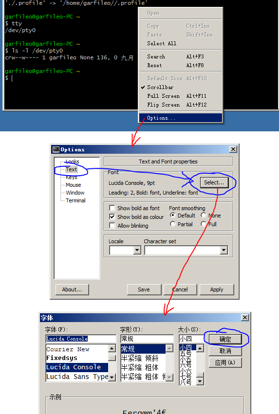
唉……好累啊……我把一些重要的地方打上圈，设好后，最后记得 Save 就好。
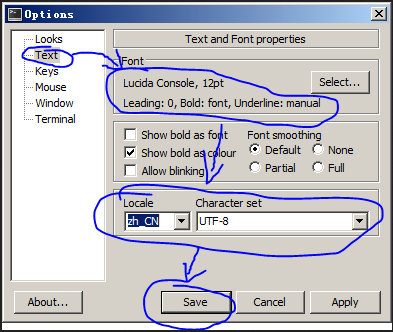
键盘：大恩不言谢……不过，总算可以观察到终端的存在了。
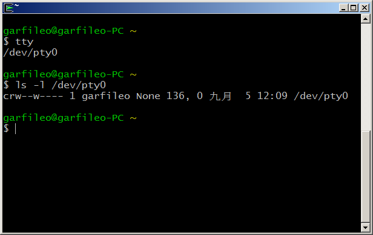
我：键盘，你知道我为什么不喜欢用 Windows 了么？
键盘：连鼠标都觉得累。
我：最累的是截屏软件。
键盘：在刚才的安装过程里，软件包的列表有很多软件，而我们却只安装了一个 Bash。以后若安装别的软件包该怎么办？
setup-x86.exe：把我复制到 D:\cygwin\bin 目录，以后在 Cygwin Terminal 里执行
$ setup-x86.exe -q -P 软件包名称
便可以安装制定的软件包。例如，安装 lua：
$ setup-x86.exe -q -P lua
可以对上述安装命令进行一些简化：
$ cat << EOF >> .bashrc alias pkg="setup-x86.exe -q -P" EOF
以后可直接使用 pkg 命令安装软件包，例如
$ pkg lua
注：我用的是 32 位 Windows。对于 64 位 Windows，需将上述的
setup-x86.exe换成setup-x86_64.exe。
PS1：我是命令行提示符，让我显得更友好一些的设定是
$ cat << EOF >> .bashrc PS1="\[\e[0;32m\]\w\n\[\e[00m\]$ " EOF
source：看我施展法力，让上述在 .bashrc 中的设定在当前终端中生效，
$ source ~/.bashrc